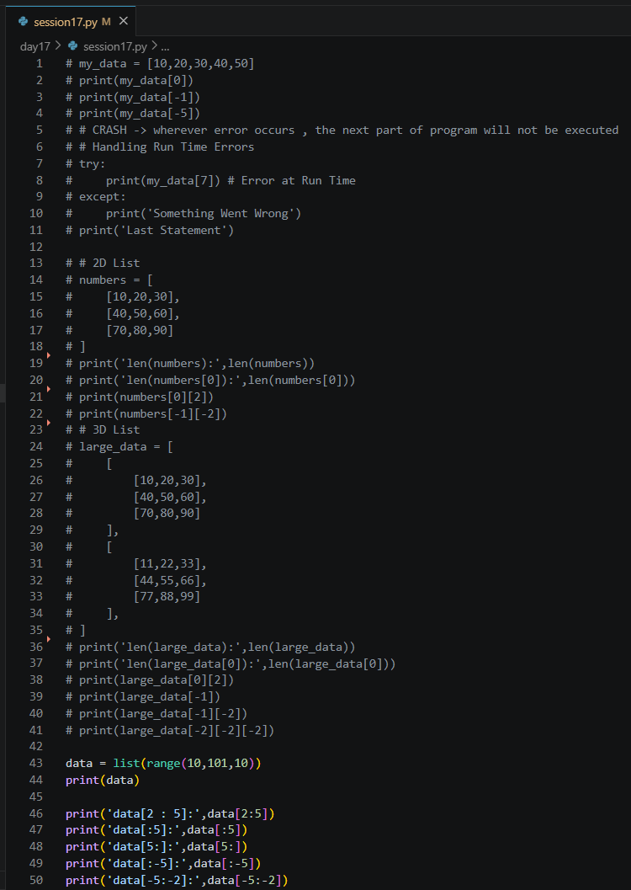
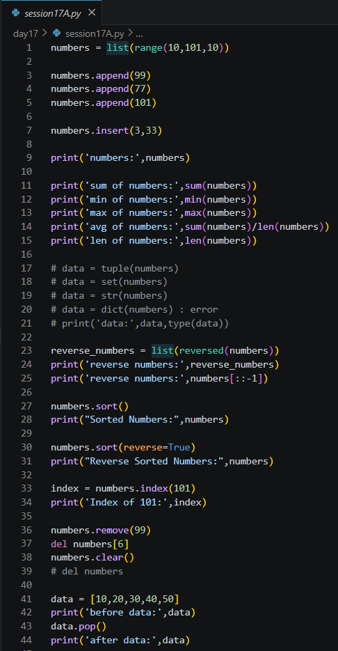
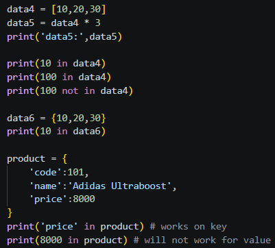
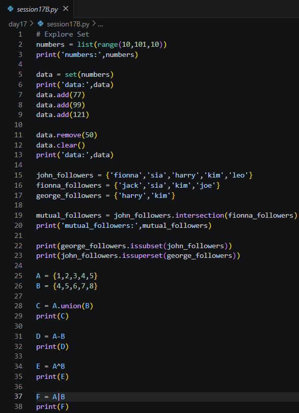
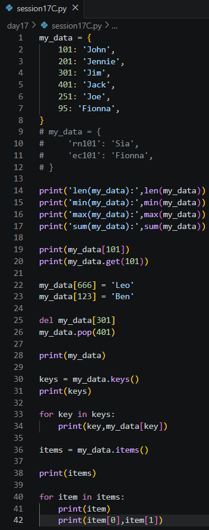
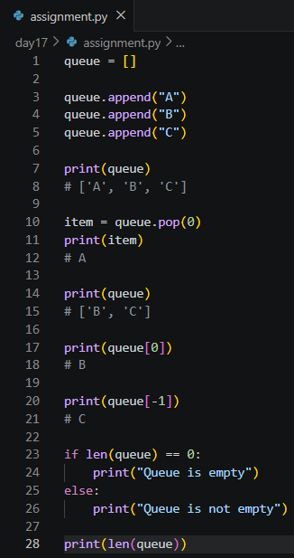

Date: 17th July 2026
Duration: 2 Hours
Training Company: Auribises Technologies
Trainer: Ishant Kumar
Day 17 focused on strengthening our understanding of Python's built-in collection data types. The session covered advanced operations on lists, sets, and dictionaries while introducing concepts such as slicing, membership operators, exception handling, and common collection methods. These data structures form the backbone of almost every Python application, making it essential to understand how to manipulate them efficiently.
Through several practical examples, we explored how Python provides powerful built-in methods that simplify data storage, retrieval, searching, sorting, and modification without requiring complex implementations.
The session began with a discussion on runtime errors and the importance of exception handling using the
try and except blocks. The trainer demonstrated how applications can continue
executing gracefully even when unexpected runtime errors occur, preventing abrupt program termination.
We also revised indexing on one-dimensional, two-dimensional, and three-dimensional lists before exploring list slicing techniques for extracting portions of data efficiently.

A significant portion of the session focused on Python lists and the wide range of operations available on
them. We practiced adding elements using append() and insert(), calculating
aggregate values using built-in functions like sum(), min(), max(),
and len(), and converting lists into other collection types.
The trainer also demonstrated reversing lists, sorting in ascending and descending order, searching using
index(), removing elements, clearing lists, and deleting objects. These operations highlighted
why lists are one of the most flexible data structures in Python.

We explored Python's membership operators in and not in, learning how they behave
differently for lists, sets, and dictionaries. While lists and sets check for values, dictionaries perform
membership tests on keys by default. Understanding this distinction is important when searching through
different collection types.

The next topic introduced Python's Set data structure, which stores only unique elements and automatically removes duplicate values. We practiced adding and removing elements while exploring various mathematical set operations that are widely used in data processing and logical comparisons.
Using practical examples based on social media followers, we learned how to identify mutual followers
through intersection(), verify subset and superset relationships, and perform operations such
as union(), difference(), and symmetric difference. These operations
demonstrated the efficiency of sets when working with unique collections of data.

The session continued with Python dictionaries, focusing on storing information as key-value pairs. We explored how to retrieve values using keys, add new entries, update existing records, delete items, and iterate through dictionary keys and values.
The trainer also demonstrated useful dictionary methods such as keys(), items(),
and get(), highlighting how dictionaries provide efficient lookup operations and are commonly
used to represent structured data throughout Python applications.

Throughout the session, we practiced various operations on Python's built-in collection types by writing small programs for lists, sets, and dictionaries. These activities helped reinforce the strengths of each data structure and demonstrated when each collection type is most appropriate for solving different programming problems.
By comparing lists, sets, and dictionaries side by side, we developed a better understanding of their performance characteristics, supported operations, and practical use cases in software development.
The assignment was to explore the implementation of a Queue using Python lists. The objective was to simulate queue behavior by inserting elements at one end and removing them from the front while maintaining the First-In, First-Out (FIFO) principle.
This exercise provided practical experience with one of the most fundamental linear data structures and
demonstrated how Python lists can be used to implement queue operations, even though specialized data
structures such as collections.deque offer better performance for production applications.
I implemented a queue using a Python list by creating enqueue and dequeue operations that maintained FIFO order. New elements were appended to the rear of the queue, while elements were removed from the front during dequeue operations. I also displayed the queue after each operation to verify that it behaved correctly.
Completing this assignment reinforced my understanding of queue operations and helped me relate Python's built-in list methods to the implementation of classical data structures studied in computer science.

try and except
blocks.append(), insert(),
sort(), reverse(), remove(), pop(), and
clear().sum(), min(), max(),
and len() for working with collections.Day 17 was an excellent revision and expansion of Python's built-in collection types. Although I was already familiar with lists, this session introduced many useful operations and built-in methods that make working with collections much more efficient. Learning different slicing techniques and collection methods helped me understand how Python simplifies common programming tasks.
I particularly enjoyed exploring sets because their mathematical operations such as union and intersection have many practical applications in data analysis and backend development. The discussion on dictionaries also reinforced how efficiently structured information can be stored and retrieved using key-value pairs.
The queue assignment connected Python programming with the data structures I have studied academically. Implementing FIFO behavior using lists helped bridge theoretical concepts with practical coding. Overall, this session strengthened my confidence in using Python's collection framework and prepared me for building more complex applications involving structured data.
The next session will continue expanding our Python and Agentic AI journey by introducing additional concepts that will further strengthen our programming skills and prepare us for developing more advanced intelligent applications.